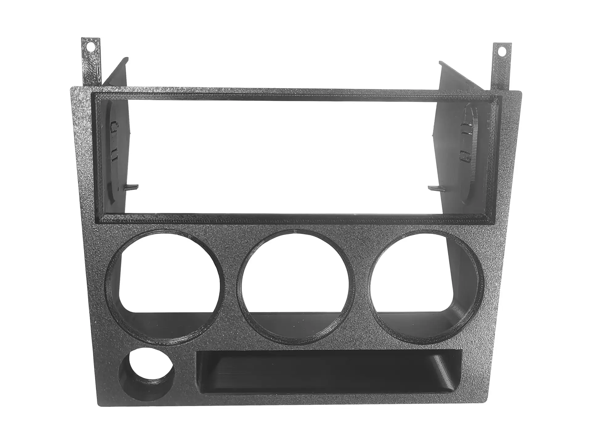
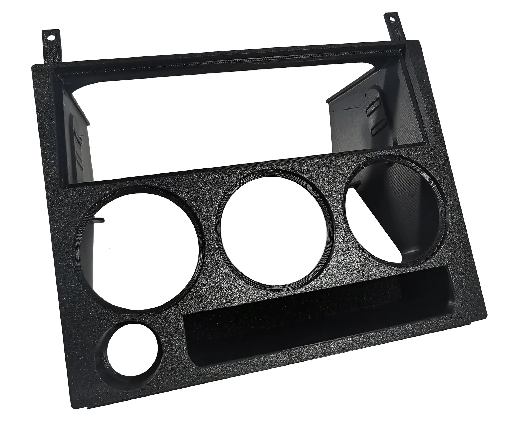
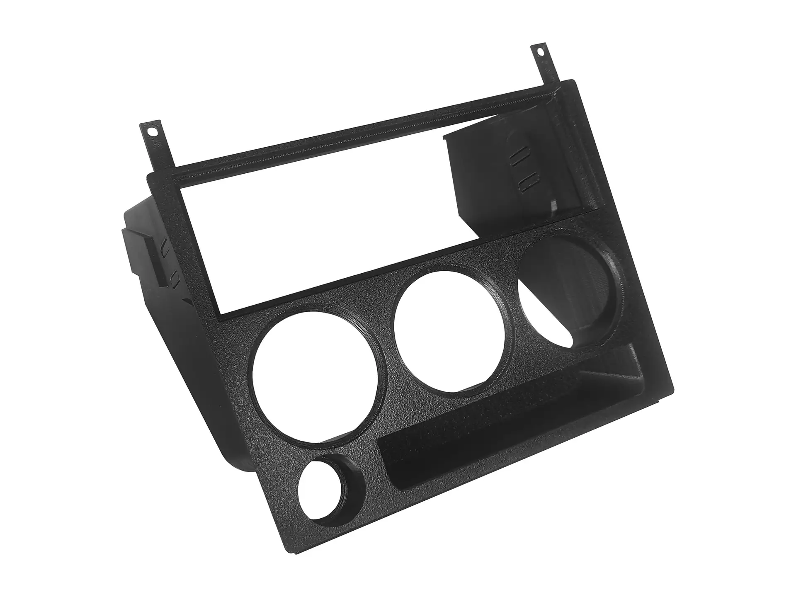
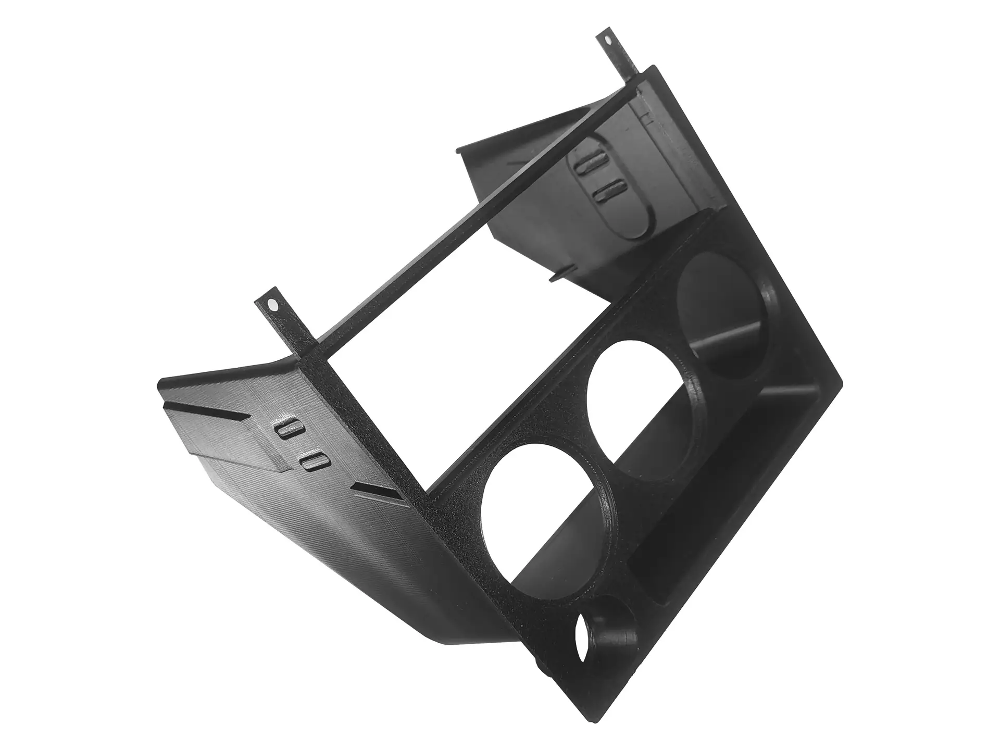
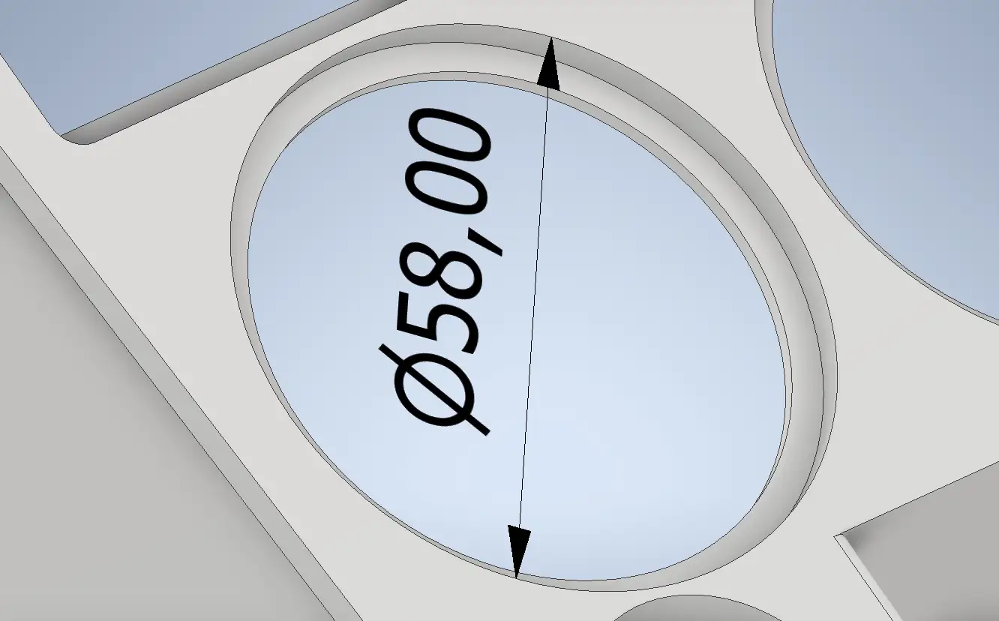

What it takes
Fig. A2 · front view
- 1DIN slotAny standard 1DIN unit, such as a single-DIN radio.
- 3 × 52 mm gauge podsFor standard 52 mm gauges, bought separately. Ø58 mm recess on the front.
- Lighter or USBThe original cigarette lighter, or a USB port.
- Ashtray bayThe standard ashtray fits perfectly, and you can still reach the fuses.
Why it fits
Part ANo changes to the car
Fully compatible with the 740 and 940. Nothing to cut or modify.
Textured front
The textured surface sits well with the colour of the interior.
3D printed
Made by 3D printing, shaped for this dashboard.
Perfect fit
Lines up with the dashboard around it.
Views
Fig. A3 to A5 · click to enlarge





Specification
Part A

| Fits | Volvo 740 and Volvo 940 |
|---|---|
| Position | Centre of the dashboard |
| Radio | Any standard 1DIN unit |
| Gauges | 3 × 52 mm, Ø58.00 mm recess on the front |
| Socket | Original cigarette lighter or a USB port |
| Ashtray | Standard ashtray, fuses stay reachable |
| Fitting | No modifications to the car. DIY, with the included guide |
| Made by | 3D printing, textured front |
| In the box | Frame and detailed installation guide |
| Price | 150 € |
What’s in the box
Part A
01
Centre dash frame
3D printed, textured front. Fits the Volvo 740 and 940 with no modifications.
02
Detailed installation guide
Step-by-step instructions, so you can fit the frame yourself.
Not included: radio or other 1DIN unit, the three 52 mm gauges, cigarette lighter or USB socket.